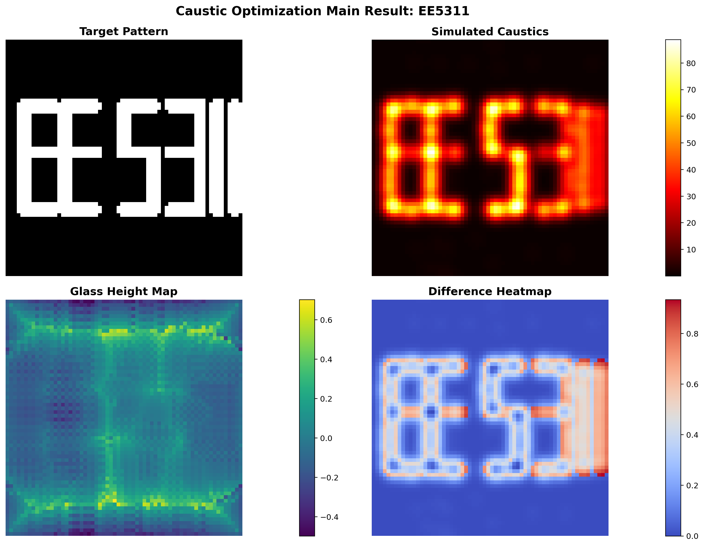
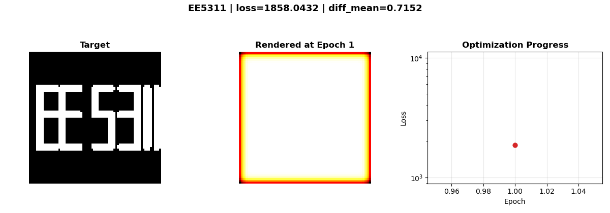
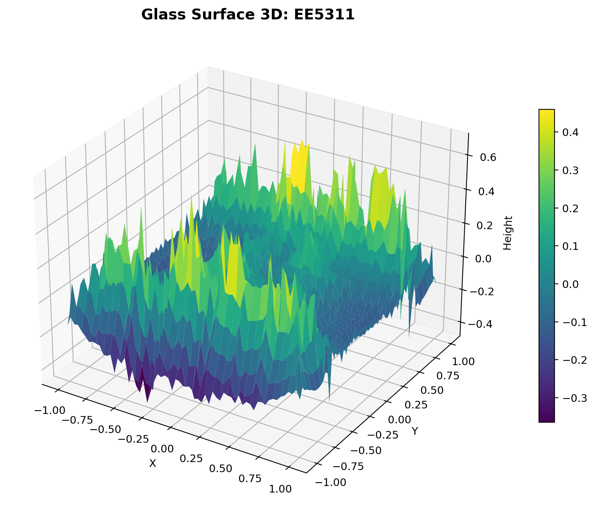
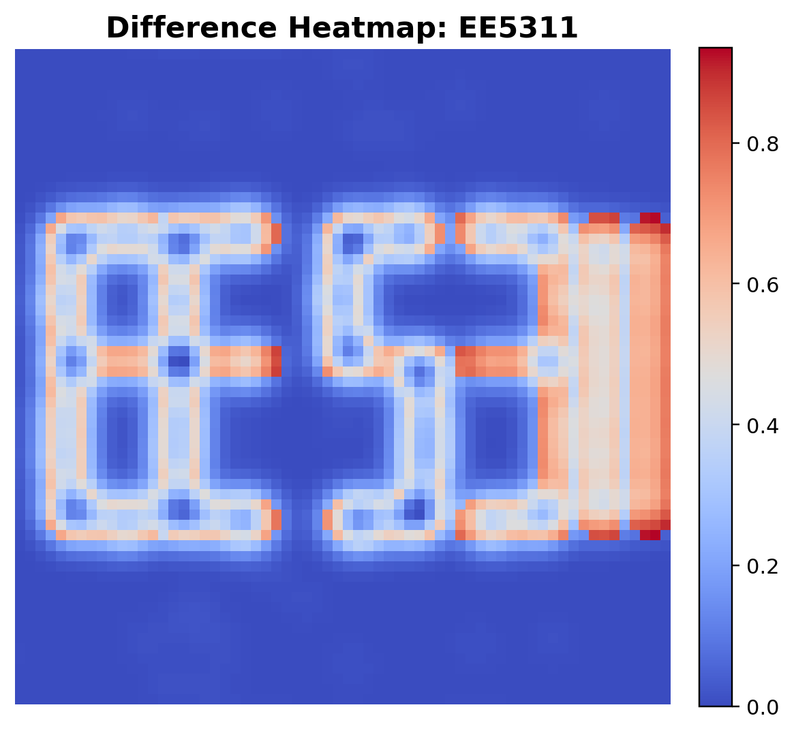
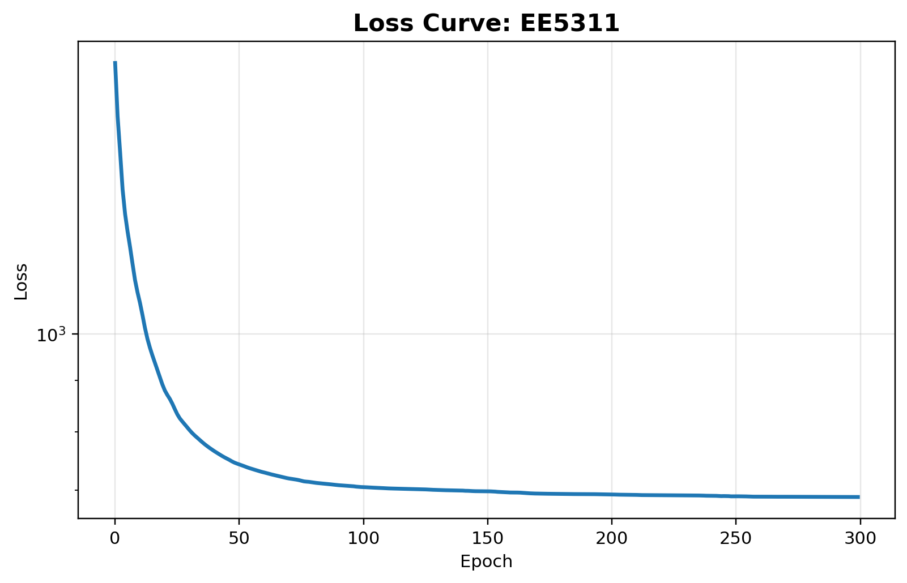
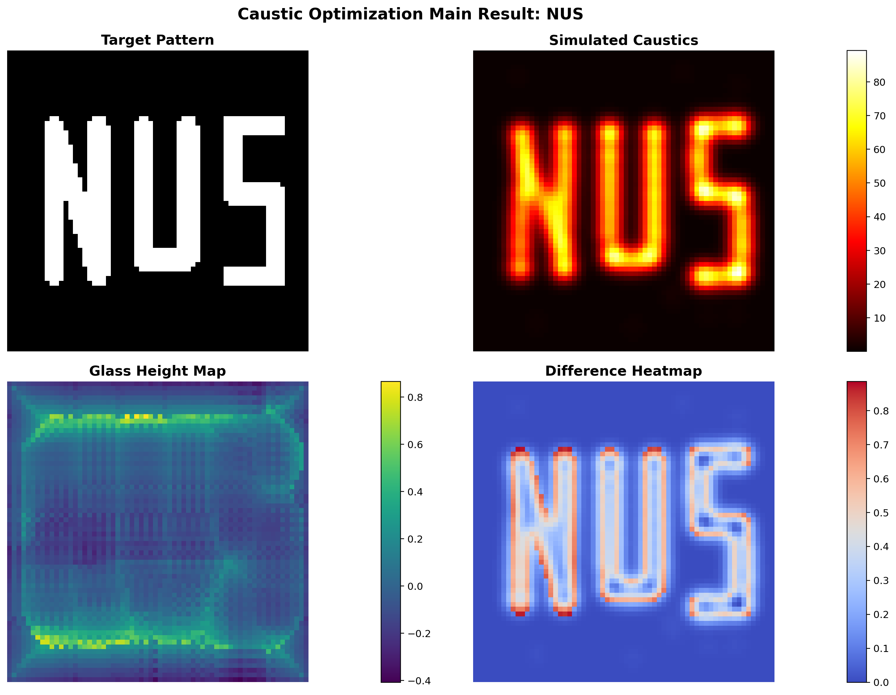
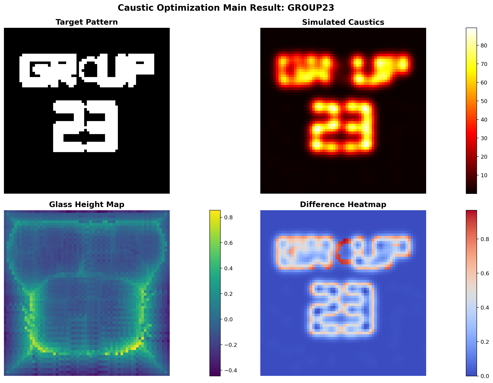

Overview
Main Result

EE5311 pattern. This case remains clearly
readable overall, with most of the remaining deviation
concentrated around finer corners and boundaries.
Dynamic View
Optimization GIF

Interpretation
Structure and Diagnostics


EE5311, the visible mismatch is most noticeable
around fine corners, narrow gaps, and stroke boundaries.

Comparative Analysis
Main Takeaways
Resolution matters most
Grid resolution is the dominant factor. Higher N
greatly improves reconstruction quality, but the runtime cost
rises sharply. For routine experiments, N = 64
offers the most reasonable quality-efficiency balance.
TV is supportive, not dominant
Changing λTV within the tested range produces only
minor visual and numerical differences. The default
λTV = 0.01 keeps the surface smooth without
noticeably restricting the solution.
Broader Gaussian helps optimization
σ = 0.06 outperforms narrower kernels in this
inverse-problem setting. A slightly blurrier
forward renderer creates a smoother optimization landscape and
leads to better final convergence.
Summary
Core Interpretation
Under the default setting
(N = 64, σ = 0.06,
λTV = 0.01, learning rate 0.01, and
200 epochs), the optimizer learns height maps that
produce recognizable caustic patterns for all three targets.
NUS, with its simpler strokes, is reproduced most
faithfully. EE5311 remains clearly readable but shows
more blur around fine corners, while GROUP23 is the
most complex case and therefore shows the largest deviation from
the target. Across all three patterns, the loss curves exhibit
rapid convergence in the first 25 to 50 epochs and then enter a
slower refinement stage. The 3D surface plots reveal structured
ridges and valleys in the height map, which directly correspond to
target strokes and help channel light toward the desired bright
regions.
Supplementary
Additional Patterns

NUS is the most faithfully
reproduced target because its stroke structure is the simplest
among the three default cases.
